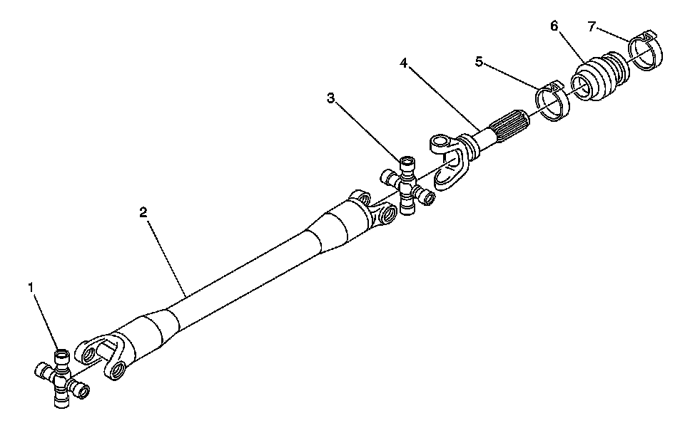
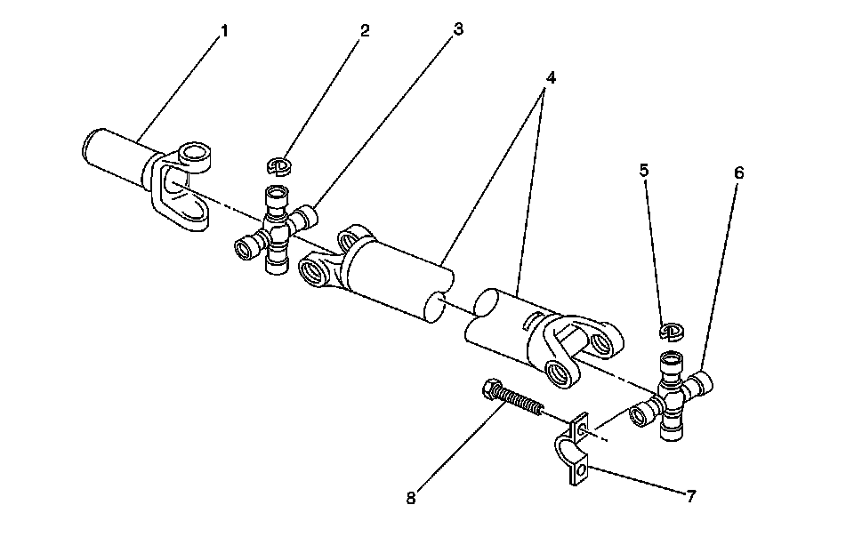

Exploded Views
Driveline Disassembled Views
Front Propeller Shaft:

1 - Propeller Shaft Universal Joint
2 - Propeller Shaft Tube
3 - Propeller Shaft Universal Joint
4 - Propeller Shaft Slip Yoke
5 - Propeller Shaft Rear Slip Yoke Boot Clamp - Front
6 - Propeller Shaft Rear Slip Yoke Boot
7 - Propeller Shaft Rear Slip Yoke Boot Clamp - Rear
One-Piece Propeller Shaft:

1 - Propeller Shaft Slip Yoke
2 - Propeller Shaft Universal Joint Spider Bearing Retainer Ring
3 - Propeller Shaft Universal Joint
4 - Propeller Shaft Tube
5 - Propeller Shaft Universal Joint Spider Bearing Retainer Ring
6 - Propeller Shaft Universal Joint
7 - Propeller Shaft Bearing Retainer
8 - Propeller Shaft Bearing Retainer Bolt